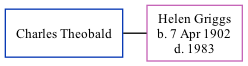

Charles Theobald, the husband of Helen Maud Griggs (the second cousin twice-removed on the father's side of Nigel Horne), and married Helen in Thanet, Kent, England around Nov 19251.
Citations
England & Wales Marriages 1837-2005 - Findmypast
Family Tree

Generated by ged2site. Last updated on Nov 13, 2024